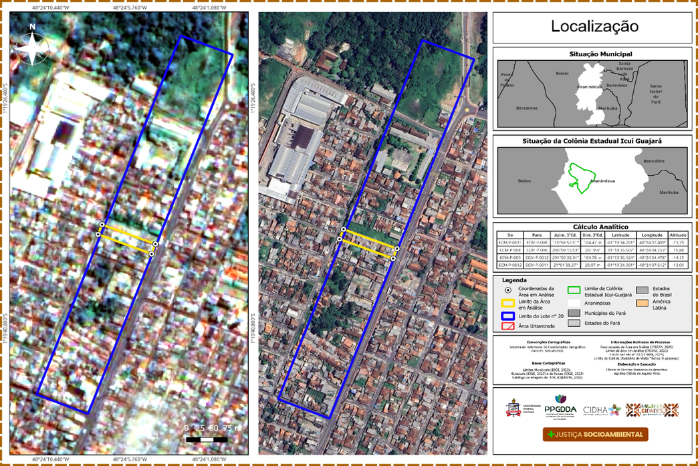

Caso 1 • Portfólio Oficial
Ananindeua – PA
Em Curso desde 2009
Comunidade Quaresma
Lote 20 da Colônia Estadual Icuí Guajará • Reintegração de Posse Urbana
Contexto Fundiário e Histórico
Ação de Reintegração de Posse iniciada em 2009 envolvendo 19 famílias vulneráveis instaladas no Lote 20 da Colônia Estadual Icuí Guajará, em Ananindeua. O litígio decorre da complexa sobreposição entre a titulação pública originária rural outorgada pelo ITERPA na década de 1970 e a expansão da malha urbana municipal.
Resultados Periciais Alcançados
A equipe multiprofissional da CIDHA comprovou, através da reconstituição cartográfica do título de 1978 e confrontação com imagens aerofotogramétricas, que a área ocupada pelas famílias não correspondia aos limites reivindicados pelo autor da ação, garantindo a permanência provisória e subsidiando a Defensoria Pública em juízo.

Título Original ITERPA (1978)
Ampliar

Planta Cartográfica do ITERPA
Ampliar

Análise Multitemporal de Satélite
Ampliar